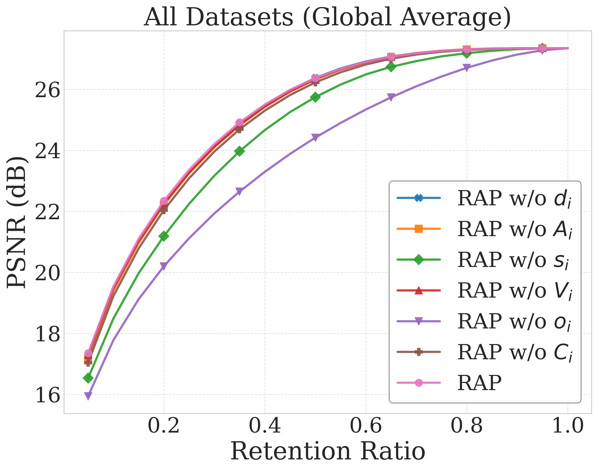

RAP：快速前馈无渲染属性引导的原始重要性评分
简单摘要
3DGS已成为新视角合成的强大显式表示，实现高保真重建和实时渲染效率。然而3DGS通常依赖数百万高斯原语来达到高保真渲染，对存储和内存造成实质性负担。这些原语对渲染质量的贡献高度不平衡——仅一小部分原语对渲染质量有价值，而大量原语因次优的稠密化过程或不完整训练而冗余。因此原语重要性评分被提出并用于选择和优先处理原语——应用于剪枝、压缩、细节层次渲染和传输等任务。LightGaussian和PUP-3DGS等先前工作证明基于重要性评分引导的剪枝能在不牺牲保真度的情况下显著减少原语数量。现有原语重要性估计方法可分为三类：基于属性的启发式方法采用简单规则（如优化中分裂大原语或丢弃不透明度低于阈值的高斯）但忽略了复杂的混合交互；基于渲染的方法通过评估每个高斯对渲染像素的实际贡献来估计重要性但依赖特定视角；基于学习的方法联合优化可学习评分掩码和场景重建但评分与特定框架紧密耦合而缺乏通用性，场景修改后预测分数失效。这促使本文重新审视内在属性作为潜在的原语重要性信号——这类指标轻量、天然模块化和可泛化。

核心创新
第一，观察到冗余原语常表现出异常内在属性——极小尺度或极低不透明度的高斯通常对渲染贡献甚微，孤立空间离群点视觉上不显著，稠密化可能产生不一致颜色或近零SH系数的高斯——基于此设计了利用内在属性的综合重要性评分框架。第二，提出多属性联合评估策略——结合尺度、不透明度、空间分布和颜色一致性等多个内在属性信号，克服了单一属性不可靠的限制。第三，该评分方法具有即插即用的模块化特性——不依赖特定视角或重建框架，可用于剪枝、压缩、LOD渲染等多种下游应用。第四，场景修改后评分可被重新计算和复用，克服了基于学习方法的局限性。
技术细节
围绕 技术总览，要设计属性引导的修剪框架，必须了解内在高斯参数与其感知和结构意义的关系。(1) 现有的基于渲染的方法已经提供了证据，表明不透明度和体积是重要性估计的核心。这些观察结果激发了构建紧凑的特征表示，该特征表示嵌入了固有的高斯属性和局部邻域统计数据。作者这样设计，是为了把这一节的输入、约束和输出关系讲清楚。
其次，我们采用基于学习的重要性预测模块，其中轻量级 MLP 将提取的特征映射到重要性分数。我们通过将内在几何和外观属性与归一化统计相结合，为每个高斯基元构造一个紧凑的 15 维特征向量，该向量由三个步骤组成。这个目标驱动网络以平衡渲染损失的方式抑制冗余图元。
3 初步的
围绕 3 初步的，要设计属性引导的修剪框架，必须了解内在高斯参数与其感知和结构意义的关系。(1) 现有的基于渲染的方法已经提供了证据，表明不透明度和体积是重要性估计的核心。这些观察结果激发了构建紧凑的特征表示，该特征表示嵌入了固有的高斯属性和局部邻域统计数据。作者这样设计，是为了把这一节的输入、约束和输出关系讲清楚。
4 提议的方法
4.1 重要性感知特征提取
围绕 4.1 重要性感知特征提取，我们通过将内在几何和外观属性与归一化统计相结合，为每个高斯基元构造一个紧凑的 15 维特征向量，该向量由三个步骤组成。特征计算、特征归一化和特征串联。作者这样设计，是为了把这一节的输入、约束和输出关系讲清楚。
每个高斯最终表示为产生一个 15 维向量（7 个全局 + 8 个局部），该向量紧凑地编码内在属性和归一化邻域统计数据。这种表示为重要性预测提供了有区别且轻量级的基础。
$$ \mathbf{F}^{raw}_i = \{ d_i, A_i, {s_0}_i, {s_1}_i, {s_2}_i, V_i, o_i, C_i \} \in R^{1\times8}, $$
放在“提议的方法”这一部分看，这条式子重点不是孤立地罗列符号，而是交代 F raw i 如何承接前面的输入并把结果交给后续步骤。
$$ d_i = \frac{1}{K} \sum_{j \in \mathcal{N}_K(i)} \| \mathbf{p}_i - \mathbf{p}_j \|_2, $$
这条式子是在定义一个可直接计算的中间量：右侧把相对位置、方向、权重或比例关系组合起来，左侧则把这个组合结果记成后续模块要反复使用的变量。
$$ A_i = \frac{1}{3} \sum_{c \in \{R,G,B\}} \sigma_m \big( c_i^c(\mathbf{v}_m) \big), $$
放在“提议的方法”这一部分看，它重点在定义或约束 A i 这一项。这条式子是在定义一个可直接计算的中间量：右侧把相对位置、方向、权重或比例关系组合起来，左侧则把这个组合结果记成后续模块要反复使用的变量。
$$ V_i = s_{0,i} \times s_{1,i} \times s_{2,i}. $$
放在“提议的方法”这一部分看，这条式子重点不是孤立地罗列符号，而是交代 V i 如何承接前面的输入并把结果交给后续步骤。
$$ f^{(G)}_i = \frac{f_i - \mu^{(G)}}{\sigma^{(G)}}, \quad f^{(L)}_i = \frac{f_i - \mu^{(L)}_i}{\sigma^{(L)}_i}, $$
放在“提议的方法”这一部分看，这条式子重点不是孤立地罗列符号，而是交代 f (G) i 如何承接前面的输入并把结果交给后续步骤。
$$ \mathbf{F}_i = \{f^{(G)}_1, \ldots, f^{(G)}_7, f^{(L)}_1, \ldots, f^{(L)}_8\}, $$
放在“提议的方法”这一部分看，这条式子重点不是孤立地罗列符号，而是交代 F i 如何承接前面的输入并把结果交给后续步骤。
4.2 学习框架及优化
围绕 4.2 学习框架及优化，第一个是渲染损失，它确保根据重要性分数进行修剪后的渲染质量尽可能高。然后通过可微光栅化器渲染修改后的集合。这个目标驱动网络以平衡渲染损失的方式抑制冗余图元。作者这样设计，是为了把这一节的输入、约束和输出关系讲清楚。
这里， 、 和 分别平衡重建保真度、剪枝强度和分数分布正则化。在训练期间，通过用预测分数对高斯函数进行软性重新加权，以可微分的方式模拟剪枝，从而使网络能够了解删除如何影响渲染质量。
$$ \tilde{o}_i = o_i S_i, \quad \tilde{\mathbf{s}}_i = \mathbf{s}_i S_i, \quad \tilde{\mathcal{G}} = \{\tilde{o}_i, \tilde{\mathbf{s}}_i, \text{others}\}. $$
放在“提议的方法”这一部分看，这条式子重点不是孤立地罗列符号，而是交代 o i 如何承接前面的输入并把结果交给后续步骤。
$$ \mathcal{L}_{\text{prune}} = ( \mathrm{mean}(S_i) - S_{\text{target}} )^2, $$
放在“提议的方法”这一部分看，它重点在定义或约束 L prune 这一项。这条式子是在定义一个可直接计算的中间量：右侧把相对位置、方向、权重或比例关系组合起来，左侧则把这个组合结果记成后续模块要反复使用的变量。
$$ \mathrm{EntropyNorm}(S) = -\frac{1}{\log B} \sum_{k=1}^{B} \tilde{p}_k \log(\tilde{p}_k + \epsilon), $$
放在“提议的方法”这一部分看。这条式子描述了多个分量的聚合或逐步合成过程。它通常表示模型如何把局部贡献、概率权重或多项损失累积成最终结果。
$$ \mathcal{L}_{\text{entropy}} = 1 - \mathrm{EntropyNorm}(S). $$
这条式子是在定义一个可直接计算的中间量：右侧把相对位置、方向、权重或比例关系组合起来，左侧则把这个组合结果记成后续模块要反复使用的变量。
实验结论
我们将 RAP 与多个基线进行比较，包括简单的不透明度阈值启发式、基于可见性的方法，例如 LightGaussian 、 MesonGS 和 EAGLES。该指标提供了对跨数据集的率失真行为的紧凑评估——较低的 BD 率表明在可比较的存储预算下具有出色的重建质量。
在修剪率为 60% 时，RAP 比竞争方法获得高达 0.5 dB PSNR 增益。BD-Rate 的降低以及 Mip-NeRF360-Outdoor 数据集等方面的改进进一步体现了这一优势。我们还观察到基于可见性和基于梯度的方法之间的鲁棒性存在显着差异。
5.1 实施细节
RAP 的 MLP 由三个隐藏层组成，宽度分别为 32、32 和 16 个神经元。我们将 RAP 与多个基线进行比较，包括简单的不透明度阈值启发式、基于可见性的方法，例如 LightGaussian 、 MesonGS 和 EAGLES。
5.2 对经过训练的 3DGS 进行事后修剪
该指标提供了对跨数据集的率失真行为的紧凑评估——较低的 BD 率表明在可比较的存储预算下具有出色的重建质量。在修剪率为 60% 时，RAP 比竞争方法获得高达 0.5 dB PSNR 增益。BD-Rate 的降低以及 Mip-NeRF360-Outdoor 数据集等方面的改 lazy' decoding='async' />
| — | LightGS | MesonGS | EAGLES | C3DGS | PUP-3DGS | RAP |
|---|---|---|---|---|---|---|
| Mip-Outdoor | -35.21 | -34.89 | -41.28 | -33.77 | -22.54 | -42.63 |
| Mip-Indoor | -31.15 | -30.34 | -24.98 | -27.63 | -8.70 | -33.90 |
| Deep Blending | -30.72 | -28.84 | -29.87 | -16.28 | -19.46 | -36.76 |
| Tanks&Temples | -37.98 | -36.12 | -30.01 | -34.37 | 7.06 | -40.11 |
| Dataset | Opacity | LightGS | MesonGS | EAGLES | C3DGS | PUP-3DGS | RAP |
|---|---|---|---|---|---|---|---|
| Mip-Outdoor | 3.73 | 15.86 | 42.40 | 42.96 | 11.69 | 20.95 | 15.64 |
| Mip-Indoor | 1.27 | 22.71 | 14.84 | 14.97 | 15.96 | 21.22 | 5.72 |
| Deep Blending | 2.99 | 20.20 | 31.30 | 31.65 | 13.62 | 20.28 | 11.64 |
| Tanks&Temples | 2.53 | 18.62 | 17.53 | 13.92 | 9.22 | 20.50 | 6.66 |
5.3 循环剪枝训练
为了评估将修剪直接集成到 3DGS 生成过程中的潜力，我们修改了管道以在优化期间定期删除冗余高斯。其中训练后修剪高达 40% 的高斯模型导致的质量下降可以忽略不计。为了评估这种集成的有效性，我们使用四个指标将最终重建与标准 3DGS 训练基线（未修剪）进行比较。
| Method | MipNeRF360 Outdoor | MipNeRF360 Indoor | Deep Blending | Tanks & Temples | ||||||||||||
|---|---|---|---|---|---|---|---|---|---|---|---|---|---|---|---|---|
| — | PSNR ↑ | SSIM ↑ | LPIPS ↓ | Size ↓ | PSNR ↑ | SSIM ↑ | LPIPS ↓ | Size ↓ | PSNR ↑ | SSIM ↑ | LPIPS ↓ | Size ↓ | PSNR ↑ | SSIM ↑ | LPIPS ↓ | — |
| baselinebg 3DGS | 24.688 | 0.729 | 0.238 | 926.895 | 31.076 | 0.925 | 0.186 | 299.202 | 29.817 | 0.907 | 0.239 | 586.064 | 23.734 | 0.853 | 0.169 | — |
| Opacity | 24.550 | 0.718 | 0.275 | 313.657 | 30.604 | 0.912 | 0.216 | 72.176 | 29.899 | 0.910 | 0.248 | 149.873 | 23.674 | 0.842 | 0.200 | — |
| LightGaussian | 24.676 | 0.728 | 0.255 | 300.907 | 30.777 | 0.917 | 0.205 | 71.676 | 29.839 | 0.908 | 0.249 | 155.207 | 23.634 | 0.845 | 0.191 | — |
| MesonGS | 24.554 | 0.723 | 0.256 | 297.255 | 30.173 | 0.914 | 0.207 | 71.587 | 29.638 | 0.904 | 0.254 | 154.137 | 23.541 | 0.839 | 0.197 | — |
| EAGLES | 24.520 | 0.722 | 0.256 | 295.899 | 29.801 | 0.911 | 0.210 | 71.356 | 29.551 | 0.904 | 0.254 | 154.352 | 23.212 | 0.834 | 0.202 | — |
| C3DGS | 24.638 | 0.723 | 0.262 | 303.820 | 30.271 | 0.912 | 0.212 | 67.821 | 29.739 | 0.905 | 0.258 | 139.431 | 23.421 | 0.836 | 0.205 | — |
| PUP-3DGS | 24.328 | 0.714 | 0.261 | 281.821 | 29.422 | 0.909 | 0.212 | 70.056 | 29.699 | 0.908 | 0.248 | 145.294 | 22.365 | 0.816 | 0.215 | — |
| RAP | 24.709 | 0.726 | 0.263 | 285.067 | 30.696 | 0.911 | 0.218 | 67.804 | 29.913 | 0.909 | 0.252 | 147.250 | 23.774 | 0.842 | 0.201 | — |
5.4 与 MPEG GSC 集成
对于每个场景，根据预测的重要性分数删除 20% 的高斯，并使用相同的编解码器设置在四个速率点对剩余的基元进行编码。重要性引导的修剪持续提高了两个分支的编码效率。相比

当然，它离真正成熟的方案还有距离：当前方案的局限在于它仍然受制于计算资源、输入质量或场景复杂度，距离真正稳健的大规模部署还有差距。后续更值得继续推进的方向，是 未来继续提升效率、泛化能力以及在更复杂场景下的稳定性。